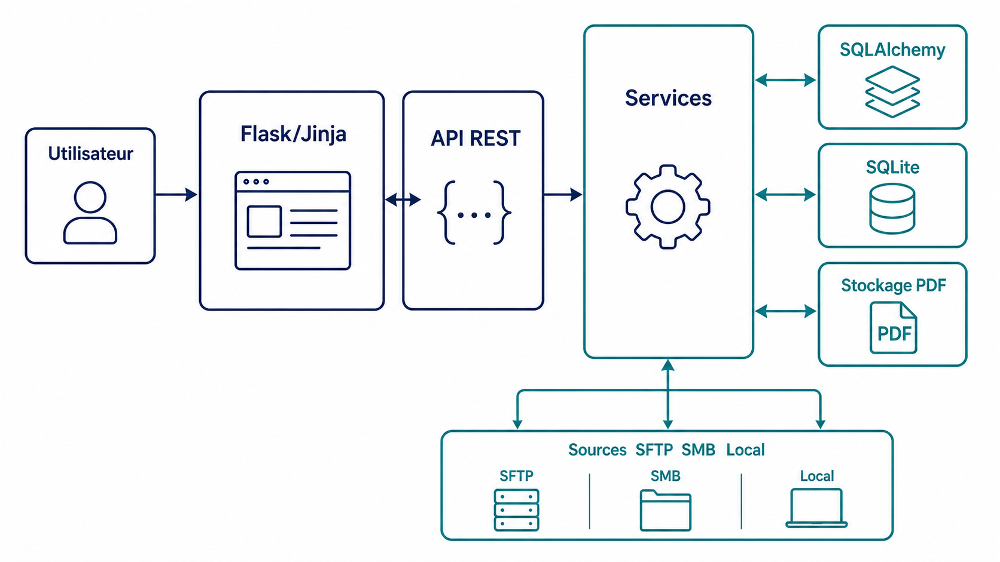
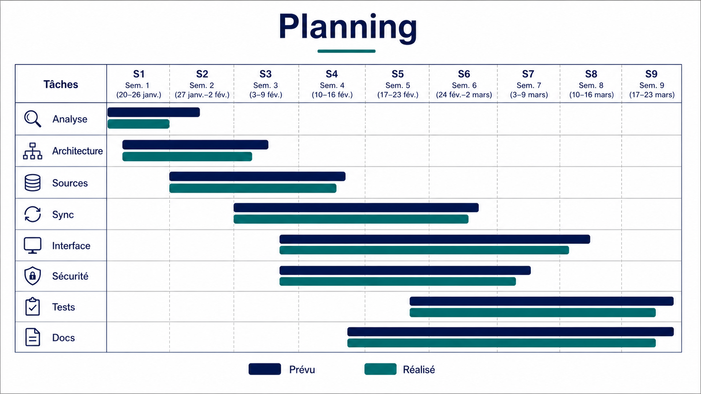
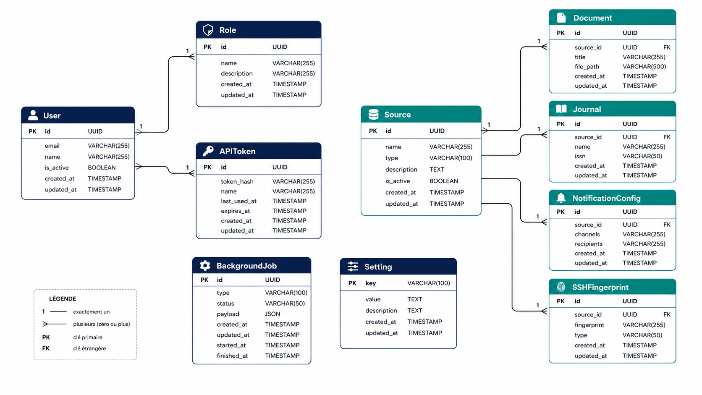
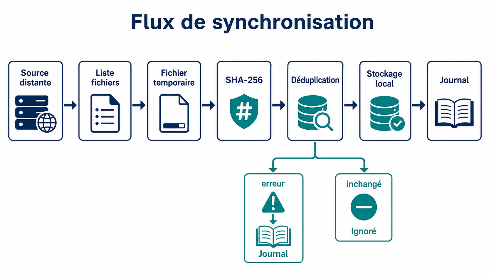
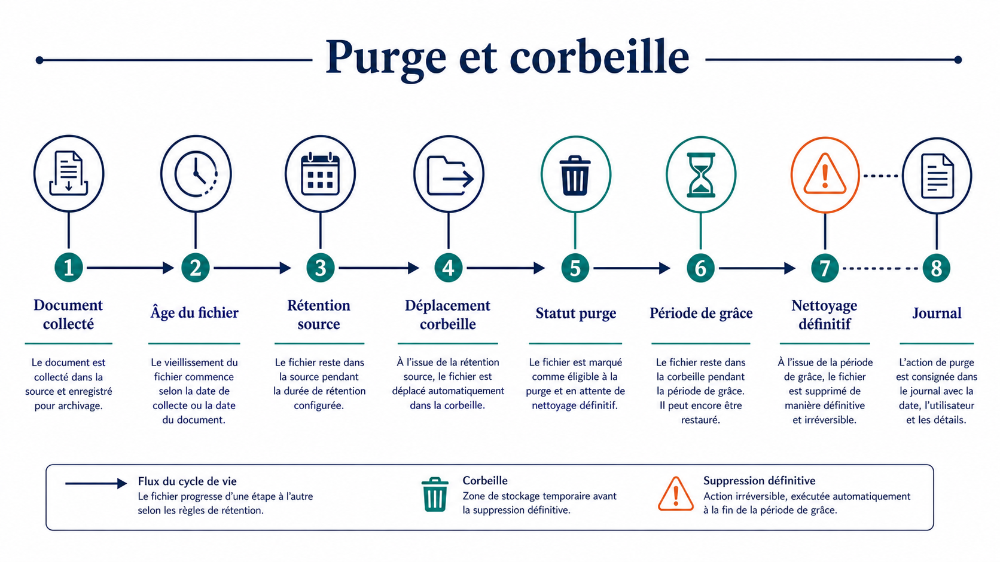
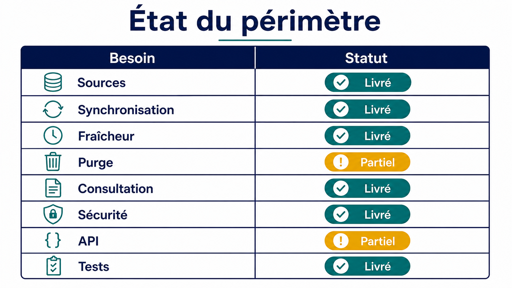
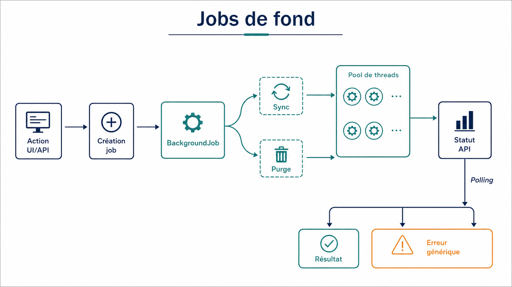
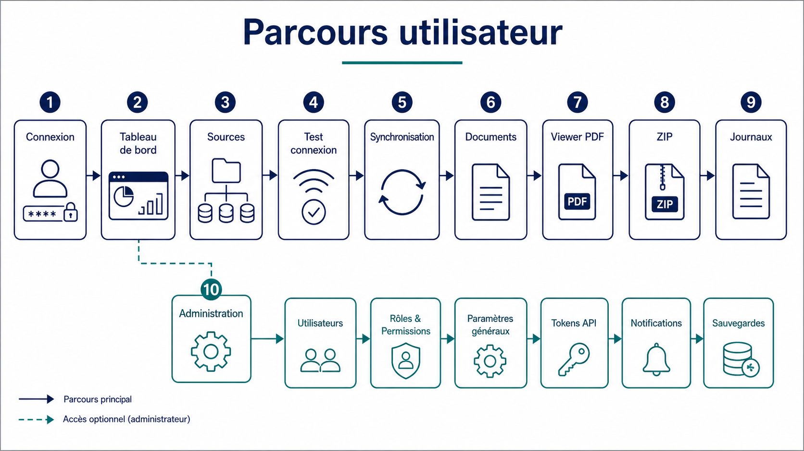
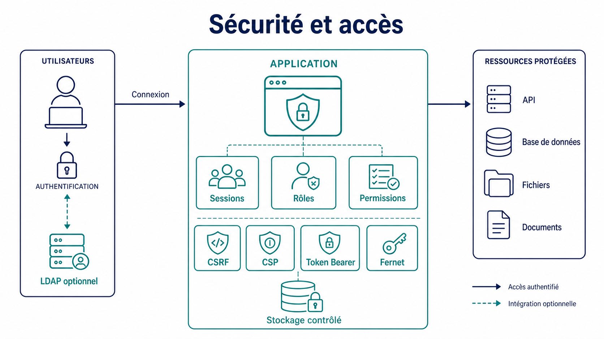
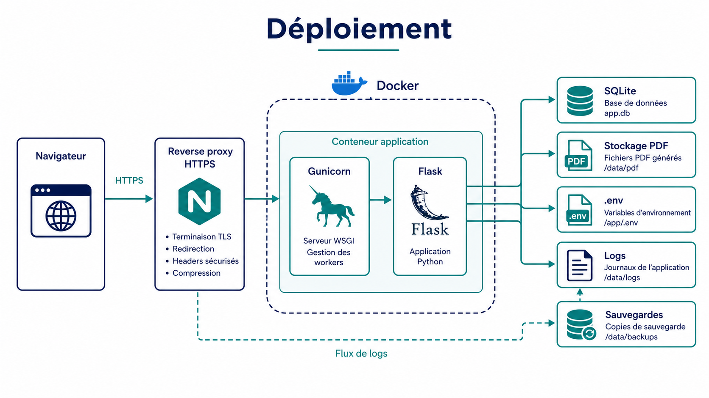

Merci à Julien Degardin pour l’encadrement au sein de la DSI du
Centre Antoine Lacassagne, pour les retours techniques et pour les
contraintes métier données dès le début du projet. Ces échanges ont
cadré le périmètre: construire une application utile en situation de
continuité d’activité, sans perdre de vue la sécurité des documents et
des accès.
Merci également à Olivier Pantz pour le suivi pédagogique du stage,
ainsi qu’aux personnes de l’IUT Nice Côte d’Azur qui ont fourni les
consignes de rendu et de soutenance. Le rapport suit ces consignes: un
contenu technique, des schémas, un résumé en français et un
Summary en anglais.
Résumé
Le stage s’est déroulé au Centre Antoine Lacassagne, au sein d’un
contexte lié à la continuité d’activité informatique. Le besoin
portait sur les PDF de modes dégradés utilisés lorsque des outils métier
deviennent indisponibles. Ces documents peuvent être stockés sur
plusieurs serveurs internes, avec des niveaux de fraîcheur difficiles à
suivre manuellement. Le projet confié consistait à développer une
application web capable de centraliser leur collecte et leur
consultation. Le cahier des charges demandait la gestion de sources
SFTP, SMB/CIFS et locales, la copie des PDF, le suivi de fraîcheur, la
purge et les journaux. L’application réalisée repose sur Flask,
Jinja, SQLAlchemy, SQLite, APScheduler et Docker. Le modèle de
données sépare les sources, documents, utilisateurs, rôles, tokens API,
journaux et jobs de fond. La synchronisation liste les fichiers
d’une source, copie chaque PDF dans un fichier temporaire, calcule un
hash SHA-256 puis évite les copies inutiles. Les documents collectés
sont consultables dans une interface web avec filtres, tri, viewer PDF,
téléchargement unitaire et export ZIP. Les opérations longues sont
suivies par des jobs de fond afin de ne pas bloquer l’interface. La
sécurité a demandé un traitement spécifique: sessions web, tokens Bearer
pour l’API, permissions, CSRF, CSP, chiffrement Fernet et validation des
chemins. Les identifiants de sources sont chiffrés et une procédure
de rotation de clé est documentée. Les exports CSV/XLSX et les
emails sont neutralisés pour éviter des injections moins visibles.
Les tests automatisés couvrent les services principaux, les permissions,
les chemins, les connecteurs mockés, la purge et plusieurs règles de
configuration. Certaines exigences restent partielles ou
conditionnelles: API non CRUD complet, notifications dépendantes du
SMTP, LDAP configurable mais non validé sur un annuaire réel. Le
résultat est une base applicative maintenable, documentée et testée,
prête à être reprise pour une validation en environnement
d’exploitation.
Summary
The internship took place at Centre Antoine Lacassagne in an IT
continuity context. The project focused on degraded-mode PDF
documents used when usual business tools are unavailable. These
files may be stored on several internal servers, making freshness and
availability hard to monitor manually. The assigned work was to
build a web application that centralizes collection, tracking and
consultation of these PDFs. The specification required SFTP,
SMB/CIFS and local sources, local copies, freshness status, purge rules
and audit logs. The delivered application uses Flask, Jinja,
SQLAlchemy, SQLite, APScheduler and Docker. The data model separates
sources, documents, users, roles, API tokens, logs and background
jobs. The synchronization process lists remote files, downloads each
PDF to a temporary file, computes a SHA-256 hash and skips unchanged
content. Collected documents can be browsed through a web interface
with filters, sorting, an integrated PDF viewer, single download and ZIP
export. Long operations are represented by background jobs so the
interface can respond without waiting for the full synchronization or
purge. Security required specific work: web sessions, Bearer tokens
for the API, permissions, CSRF, CSP, Fernet encryption and path
validation. Source credentials are encrypted, and a key rotation
procedure is documented for operations. CSV/XLSX exports and email
content are sanitized to avoid less obvious injection cases.
Automated tests cover the main services, permissions, path confinement,
mocked connectors, purge behavior and configuration rules. Some
requirements remain partial or conditional: the API is not a full CRUD
API, notifications depend on SMTP configuration, and LDAP is
configurable but not validated against a real directory in the
repository. The result is a documented and tested application base
that can be continued and validated in an operational environment.
Sommaire
Remerciements
Résumé et Summary
Table des figures et glossaire
Introduction
Contexte d’accueil
Cahier des charges et analyse
Outils, existant et choix techniques
Rapport technique
Manuel d’installation et d’utilisation
Bilan, perspectives et rapport d’activité
Conclusion
Bibliographie et sitographie
Annexes
Quatrième de couverture
Table des figures
N°
Figure
Fichier
1
Architecture générale de StageSarcophage
images/schema-architecture-generale.png
2
Modèle de données simplifié
images/schema-modele-donnees.png
3
Flux de synchronisation
images/schema-flux-synchronisation.png
4
Sécurité et accès
images/schema-securite-acces.png
5
Jobs de fond
images/schema-jobs-fond.png
6
Purge et corbeille
images/schema-purge-corbeille.png
7
Déploiement
images/schema-deploiement.png
8
Parcours utilisateur
images/schema-parcours-utilisateur.png
9
Planning prévu/réalisé
images/schema-gantt-prevu-realise.png
10
État du périmètre
images/schema-matrice-exigences.png
Glossaire
Terme
Définition
API REST
Interface HTTP destinée aux intégrations internes. Dans ce projet,
elle est exposée sous /api/v1 et utilise des tokens
Bearer.
Bearer token
Jeton transmis dans l’en-tête Authorization. Il évite
d’utiliser une session web pour l’API.
CSRF
Attaque qui force un navigateur authentifié à envoyer une requête
non voulue. Les formulaires web modifiants sont protégés.
Fernet
Mécanisme de chiffrement symétrique utilisé pour les identifiants de
sources.
Mode dégradé
Procédure ou document utilisé lorsque le fonctionnement normal d’un
outil métier n’est plus disponible.
SHA-256
Fonction de hachage utilisée pour comparer le contenu des PDF
collectés.
SMB/CIFS
Protocole d’accès aux partages de fichiers Windows.
SFTP
Protocole de transfert de fichiers au-dessus de SSH, utilisé pour
les sources Linux.
SQLite WAL
Mode d’écriture de SQLite adapté à une application légère avec accès
concurrents limités.
Introduction
Dans un établissement de santé, l’indisponibilité d’un outil métier
ne doit pas bloquer l’accès aux procédures essentielles. Les modes
dégradés répondent à ce besoin: formulaires, fiches réflexes, bons
vierges et procédures papier restent disponibles même lorsque le système
habituel ne l’est plus. Le cahier des charges fourni par la DSI du
Centre Antoine Lacassagne décrit un problème précis: ces PDF existent,
mais ils peuvent être dispersés sur plusieurs serveurs Windows et Linux,
sans vue centralisée sur leur fraîcheur, leur disponibilité et leur
cycle de vie.
Le projet StageSarcophage vise à réduire cette dispersion.
L’application doit récupérer des PDF depuis des sources hétérogènes, les
copier localement, calculer leur état de fraîcheur, permettre leur
consultation rapide et tracer les opérations. Le besoin n’est pas de
produire un outil documentaire général. Le périmètre est plus étroit:
conserver un accès contrôlé à des documents utiles en situation
perturbée, avec assez de journaux et de règles de sécurité pour que
l’application puisse être exploitée sérieusement.
Le rapport présente d’abord le contexte d’accueil et le cahier des
charges. Il décrit ensuite les choix techniques, puis le fonctionnement
interne de l’application: architecture Flask, modèle SQLAlchemy,
synchronisation, purge, sécurité, API, interface et tests. Les dernières
parties donnent un manuel d’installation, un bilan des écarts et des
perspectives pour une reprise du projet.
Présentation
de l’entreprise et contexte d’accueil
Le Centre Antoine Lacassagne est un centre de lutte contre le cancer
situé à Nice. Dans ce rapport, la présentation se limite aux
informations utiles au projet: l’application a été développée pour un
contexte de DSI hospitalière, avec des contraintes de continuité, de
traçabilité et de sécurité. Le site du Centre présente son activité de
soins, de recherche et d’accompagnement des patients. Pour le projet,
l’élément important est l’environnement informatique: les documents de
modes dégradés doivent rester disponibles même lorsque les outils
habituels ou certains accès réseau sont perturbés.
La DSI intervient ici comme service responsable de l’accès aux
documents, de la configuration des sources et de l’exploitation de
l’application. Le cahier des charges demande une application web
interne, conteneurisable, configurable par variables d’environnement et
capable de fonctionner avec SQLite. Cette contrainte oriente fortement
la conception: il faut produire un système suffisamment simple à
déployer, mais assez structuré pour gérer des accès réseau, des
fichiers, des droits et des logs.
Les documents manipulés peuvent contenir des données sensibles. Le
rapport ne peut pas affirmer une conformité HDS complète, car le dépôt
ne prouve pas une qualification d’hébergement ni une validation
juridique. En revanche, le code et la documentation montrent des mesures
applicatives cohérentes avec ce contexte: chiffrement des identifiants,
permissions, contrôle des chemins, headers HTTP, gestion des secrets et
tests de sécurité.
Cahier des charges et
analyse du besoin
Le fichier cahier_des_charges.md est le document de
référence. Il demande cinq blocs fonctionnels: gestion des sources,
collecte des documents, contrôle de fraîcheur, purge automatique et
consultation des documents. Il ajoute des exigences d’administration, de
sécurité, de performance, de fiabilité et de déploiement.
La demande principale tient en une chaîne: déclarer une source,
tester l’accès, synchroniser les PDF, stocker une copie locale, suivre
l’âge des documents, permettre la consultation et supprimer les fichiers
trop anciens selon une règle de rétention. Le besoin est opérationnel.
Une personne chargée de maintenir les modes dégradés doit pouvoir savoir
quels documents sont disponibles, lesquels deviennent anciens, quelles
sources sont en erreur et quelles actions ont été effectuées.
Prévu par configuration et reverse proxy, pas assuré par Flask
seul
docs/OPERATIONS.md, config.py,
Dockerfile
Performance 500 PDF en moins de 5 min
Non prouvé par benchmark dans le dépôt
Aucun test de charge équivalent
Sauvegarde automatique de la base
Non livrée comme tâche automatique
docs/OPERATIONS.md liste les éléments à
sauvegarder
La figure 1 situe l’application dans son environnement logique:
utilisateur web, API, services, base SQLite, stockage local et sources
documentaires.

Figure 1 - Architecture générale de
StageSarcophage.
Le périmètre réellement livré couvre le cœur du besoin, mais il ne
faut pas le présenter comme une solution hospitalière complète déjà
validée en production. Le dépôt montre une application prête pour une
phase d’essai ou de reprise technique, avec une documentation
d’exploitation, des tests et un Dockerfile. Il ne montre pas une
validation terrain avec vrais serveurs SFTP, SMB, LDAP et SMTP.
Le planning du stage a suivi une progression classique: analyse du
besoin, socle Flask/SQLite, sources, synchronisation, interface,
sécurité, tests et documentation. La figure 9 garde ce découpage en
semaines S1 à S9 pour éviter d’inventer des dates intermédiaires trop
précises.

Figure 9 - Planning synthétique prévu et
réalisé sur les neuf semaines de stage.
Outils, existant et choix
techniques
Le choix de Flask correspond au cahier des charges, qui cite
Python/Flask comme stack proposée pour rester cohérent avec l’écosystème
existant. Le dépôt confirme cette orientation: run.py,
app/__init__.py, les blueprints de app/routes/
et les templates Jinja forment une application web côté serveur. Ce
choix évite un frontend JavaScript lourd et garde une architecture
lisible pour un projet interne.
SQLite est utilisé avec SQLAlchemy. Ce choix simplifie le
déploiement: pas de serveur de base supplémentaire à installer,
sauvegarde par fichier, migrations légères. La limite est claire: ce
n’est pas une architecture distribuée. Si le volume, les accès
concurrents ou la haute disponibilité deviennent prioritaires, une
migration PostgreSQL devra être étudiée.
Les connecteurs reposent sur des bibliothèques adaptées aux
protocoles demandés: Paramiko pour SFTP, smbprotocol pour
SMB/CIFS, et la bibliothèque standard Python pour les chemins locaux.
APScheduler gère les tâches planifiées. Les jobs de fond utilisent un
ThreadPoolExecutor interne, suffisant pour une application
légère, mais différent d’une file distribuée comme Celery.
Docker et Gunicorn servent au lancement production. Le dépôt demande
toutefois de placer l’application derrière un reverse proxy HTTPS. Ce
point doit rester écrit comme une consigne d’exploitation, pas comme une
fonctionnalité TLS implémentée par l’application elle-même.
Les alternatives non retenues peuvent être résumées simplement. Une
GED complète aurait fourni plus de fonctions documentaires, mais aurait
dépassé le besoin de collecte contrôlée de PDF de modes dégradés. Une
application avec frontend SPA aurait augmenté la surface technique sans
bénéfice évident pour les écrans demandés. Une base PostgreSQL aurait
été mieux adaptée à de forts accès concurrents, mais SQLite répond au
cahier des charges initial de simplicité.
Rapport technique
Architecture applicative
StageSarcophage est un monolithe Flask. Les routes HTTP restent
responsables de l’authentification, des permissions, de la lecture des
paramètres de requête et du rendu. Les traitements métier sont placés
dans app/services/: synchronisation, purge, exports,
notifications, LDAP, jobs de fond et connecteurs. Les modèles SQLAlchemy
sont dans app/models/. Les utilitaires de sécurité sont
dans app/utils/.
Cette séparation évite de mélanger les formulaires HTML, les accès
réseau et les règles de stockage dans les mêmes fonctions. Exemple: la
route de synchronisation d’une source appelle l’orchestrateur, qui crée
un job, puis le service de synchronisation sélectionne le connecteur
selon le protocole. Le code reste lisible parce que chaque couche
manipule un niveau d’abstraction différent.
Le modèle de données, présenté figure 2, met au centre la relation
entre Source et Document. Les autres tables
répondent à des besoins d’exploitation: Journal pour les
événements, BackgroundJob pour les opérations longues,
User, Role et APIToken pour les
accès.

Figure 2 - Modèle de données
simplifié.
Sources et synchronisation
Une source décrit l’origine des PDF: protocole, adresse, chemin
distant, identifiants, filtre de fichiers, fréquence de synchronisation,
seuils de fraîcheur et durée de rétention. Les protocoles confirmés par
le code sont sftp, smb et local.
Les identifiants sont accessibles via les propriétés login
et mot_de_passe de Source; les colonnes
physiques sont chiffrées.
Le service app/services/sync_service.py applique la même
logique à toutes les sources. Il choisit le connecteur avec
_get_connector, liste les fichiers distants, nettoie le nom
de fichier, télécharge dans un fichier temporaire, calcule le hash
SHA-256, puis remplace le fichier final seulement si le contenu a
changé. Cette étape temporaire limite le risque de fichier partiellement
écrit.

Figure 3 - Flux de synchronisation d’un
document.
La difficulté principale de cette partie vient des chemins. Un nom
distant ne peut pas être utilisé tel quel. Un fichier appelé
../secret.pdf doit être refusé ou neutralisé, que la source
soit locale, SFTP ou SMB. La validation ne concerne pas seulement la
synchronisation: le même problème revient au téléchargement, au ZIP, à
la purge et à la restauration depuis la corbeille. Le dépôt traite ce
point dans app/utils/files.py,
app/services/sync_service.py,
app/routes/documents.py et
app/services/purge_service.py.
Les tests réseau ne se connectent pas à de vrais serveurs. Ce choix
est volontaire: les tests doivent rester reproductibles sur un poste de
développement ou dans une intégration continue. Les connecteurs SFTP et
SMB sont donc testés avec mocks. Le rapport doit le dire clairement. Les
tests prouvent la logique d’appel, de filtrage et de gestion d’erreur;
ils ne prouvent pas une compatibilité exhaustive avec chaque serveur
réel.
Fraîcheur, purge et corbeille
Chaque document porte une date de modification source, une date de
collecte, une taille, un hash et un statut. Les statuts sont définis
dans app/models/document.py: ok,
avertissement, critique, purge.
Le service app/services/purge_service.py met à jour les
statuts selon les seuils configurés sur la source.
La purge ne supprime pas immédiatement le fichier. Elle déplace le
document expiré vers _corbeille, marque le document en
PURGE, puis laisse un nettoyage définitif supprimer les
fichiers de corbeille après une période de rétention. Cette approche
limite les erreurs irréversibles. Elle correspond mieux à un contexte
interne qu’une suppression directe.

Figure 6 - Cycle de purge avec corbeille
et nettoyage différé.
La purge est classée partielle dans la matrice, car le cahier des
charges mentionne des politiques paramétrables et une grâce optionnelle.
Le dépôt contient une corbeille et une configuration
CORBEILLE_RETENTION_JOURS, mais toutes les variantes métier
possibles ne sont pas démontrées par des scénarios d’exploitation.

Figure 10 - État synthétique du périmètre
demandé.
Jobs de fond
Les synchronisations et purges peuvent prendre du temps.
L’application évite de bloquer la réponse HTTP en créant des
BackgroundJob. Le service
app/services/job_service.py crée une ligne en base, exécute
le traitement en ligne si JOBS_RUN_INLINE est actif, ou
dans un pool de threads sinon. L’API peut ensuite renvoyer le statut
d’un job.

Figure 5 - Exécution des synchronisations
et purges par jobs de fond.
Cette solution reste interne au processus Flask. Elle suffit pour une
application légère, mais elle n’a pas les garanties d’une file
distribuée. Un redémarrage du processus pendant un job peut nécessiter
un traitement manuel ou une relance. Cette limite est acceptable dans le
périmètre actuel si elle est connue par l’exploitant.
Le mode JOBS_RUN_INLINE est utile pour les tests. Il
rend l’exécution déterministe: le test reçoit un job déjà exécuté au
lieu d’attendre un thread. Cette différence entre production et test a
demandé de faire attention aux assertions sur les statuts.
Interface web et parcours
utilisateur
L’interface est rendue côté serveur avec Jinja et Bootstrap. Le
parcours principal est simple: connexion, tableau de bord, gestion d’une
source, test de connexion, synchronisation, consultation des documents,
téléchargement et lecture des journaux. Les pages d’administration
couvrent les utilisateurs, rôles, tokens, notifications, LDAP et
paramètres.

Figure 8 - Parcours utilisateur
principal.
La page Documents filtre par source, statut et recherche texte. Elle
permet aussi le tri, la pagination, le viewer PDF, le téléchargement
unitaire et le ZIP. Le ZIP est limité pour éviter une archive trop
lourde: app/routes/documents.py contient une limite de 100
documents et 500 Mo. Ce genre de limite n’est pas décoratif; il protège
le serveur contre une action trop coûteuse lancée depuis
l’interface.
Les templates contiennent aussi des éléments d’accessibilité de base:
lien d’évitement, cible main, labels, scopes de tables et
noms accessibles sur les actions. Ce n’est pas un audit WCAG complet,
mais ce travail évite les oublis les plus visibles sur une console
interne.
Sécurité
La sécurité de StageSarcophage repose sur plusieurs couches.
L’interface web utilise Flask-Login et des sessions. L’API utilise des
tokens Bearer stockés hachés en base. Les routes sensibles vérifient des
permissions, pas seulement un rôle nommé administrateur. Les formulaires
web modifiants sont protégés par CSRF.

Figure 4 - Synthèse des contrôles d’accès
et de sécurité.
Les secrets sont contrôlés au démarrage. En production,
SECRET_KEY et ENCRYPTION_KEY sont requis. Les
identifiants des sources sont chiffrés avec Fernet dans
app/models/source.py et app/utils/crypto.py.
Le dépôt contient aussi un service de rotation:
app/services/encryption_rotation_service.py. Cette rotation
est importante, car remplacer une clé Fernet sans ré-encrypter les
données rendrait les identifiants illisibles.
Les chemins sont confinés au stockage contrôlé avec
realpath et commonpath. Cette règle est plus
solide qu’un simple remplacement de ../, car elle tient
compte des chemins absolus et des liens symboliques. Elle protège les
téléchargements, le ZIP, la purge et la restauration.
Les exports CSV/XLSX neutralisent les valeurs qui pourraient être
interprétées comme formules tableur. Les notifications et rapports
échappent les contenus HTML. Ce point est facile à manquer, car il ne
ressemble pas à une injection SQL classique. Les tests
tests/test_exports_sanitization.py couvrent ces cas.
La CSP et les headers HTTP sont posés dans
app/__init__.py: nosniff,
SAMEORIGIN, politique de referrer, permissions policy et
nonce sur les scripts. HTTPS reste une contrainte de déploiement
derrière reverse proxy. L’application peut forcer HTTPS selon
configuration, mais elle ne remplace pas une terminaison TLS
correctement administrée.
API REST
L’API v1 est définie dans app/routes/api.py. Elle expose
un healthcheck public, des statistiques, la liste des sources, le détail
d’une source, le déclenchement d’une synchronisation, le statut d’un
job, la liste des documents, le détail d’un document et le
téléchargement. La documentation OpenAPI est placée dans
app/api/openapi.py.
L’API n’est pas un CRUD complet. Elle sert surtout à consulter l’état
et à déclencher des opérations. La création, modification et suppression
de sources restent dans l’interface web. Cette limite est saine pour le
périmètre actuel: exposer un CRUD complet demanderait plus de
validations, plus de tests et une politique d’autorisation plus
fine.
La difficulté technique vient du double modèle d’accès. Un
utilisateur web passe par une session et CSRF; un client API passe par
token Bearer. Les deux doivent aboutir aux mêmes permissions métier. Les
tests tests/test_api_permissions.py vérifient que les
tokens ne contournent pas les droits.
Déploiement et exploitation
Le dépôt fournit un Dockerfile, un docker-compose.yml,
un entrypoint.sh et des commandes Flask pour initialiser ou
migrer la base. Le lancement production passe par Gunicorn dans le
conteneur. La documentation d’exploitation demande de sauvegarder la
base SQLite, le stockage PDF, le fichier .env et les logs
si l’historique est nécessaire.

Figure 7 - Déploiement prévu autour de
Docker, Gunicorn et reverse proxy HTTPS.
Les variables minimales sont SECRET_KEY,
ENCRYPTION_KEY, STORAGE_DIR et
FLASK_ENV=production. D’autres variables contrôlent les
jobs, les racines locales autorisées, LDAP, HTTPS et le proxy. Le
fichier .env doit rester ignoré par Git et avoir des
permissions restrictives. La commande make permissions
vérifie ce point.
SQLite simplifie la mise en route, mais impose une discipline
d’exploitation: sauvegarde régulière, surveillance de la taille de base,
prudence sur les accès concurrents et plan de migration si le volume
augmente.
Tests et qualité
La commande centrale est make check. Elle lance Ruff sur
les erreurs Python critiques, pytest avec couverture, Bandit,
pip-audit, un scan de secrets suivis par Git et un contrôle
des permissions du fichier .env. Les tests couvrent les
modèles, la synchronisation, la purge, les sources, les permissions, la
sécurité, LDAP, SFTP, SMB, les exports, les notifications et les
templates.
Les tests utilisent SQLite en mémoire et un stockage temporaire.
Cette stratégie rend les tests rapides et isolés. Elle impose toutefois
de bien recréer les tables et de maîtriser les fixtures
Flask/SQLAlchemy. Pour un niveau BUT2, cette partie est une difficulté
réelle: il faut comprendre l’application factory, le contexte Flask, la
session SQLAlchemy et la différence entre test unitaire et test
d’intégration léger.
Les commandes ciblées documentées dans docs/TESTING.md
permettent d’éviter de relancer toute la suite pendant chaque
modification:
Le dépôt ne contient pas de benchmark prouvant la synchronisation de
500 PDF en moins de 5 minutes. Cette exigence doit donc rester à
valider. Le même principe vaut pour LDAP, SMTP, SFTP et SMB contre de
vrais serveurs: les mocks prouvent la logique applicative, pas tous les
comportements d’infrastructure.
Manuel d’installation et
d’utilisation
Installation locale
Créer l’environnement Python et installer les dépendances:
.venv/bin/flask--app run.py run --host 0.0.0.0 --port 5000
L’application est ensuite accessible sur
http://127.0.0.1:5000/login.
Lancement Docker
Le dépôt documente le lancement suivant:
docker compose builddocker compose up -ddocker compose exec web flask init-dbdocker compose exec web flask create-admin --username admin --password admin12345docker compose logs -f web
En production, l’application doit être placée derrière un reverse
proxy HTTPS. Les variables FORCE_HTTPS,
TRUST_PROXY et SESSION_COOKIE_SECURE doivent
correspondre à la façon dont TLS est terminé.
Parcours utilisateur
Le parcours de test fonctionnel est le suivant:
Se connecter avec un compte administrateur.
Aller dans Sources.
Créer une source SFTP, SMB ou locale.
Tester la connexion.
Lancer une synchronisation.
Aller dans Documents.
Vérifier les filtres, le tri, la pagination et les statuts.
Ouvrir un PDF dans le viewer.
Télécharger un PDF ou un ZIP.
Aller dans Journaux pour vérifier les événements.
Aller dans Administration pour gérer utilisateurs,
rôles, tokens et notifications.
Exploitation
Les éléments à sauvegarder sont la base SQLite, le dossier de
stockage PDF, le fichier .env et les logs si l’historique
technique doit être conservé. La rotation Fernet se fait avec:
Le travail réalisé couvre le cœur du cahier des charges: sources,
synchronisation, consultation, purge, statuts, journaux, rôles, API,
tests et documentation. Les parties les plus longues n’ont pas été les
écrans, mais les règles qui empêchent un cas limite de devenir un
problème: noms de fichiers dangereux, chemins hors stockage, erreurs
publiques trop détaillées, exports tableur, droits API et rotation de
clé.
La première difficulté a été de garder une architecture simple sans
tout placer dans les routes Flask. Les services ont servi de frontière:
sync_service pour la copie et le hash,
purge_service pour la rétention, job_service
pour les opérations longues, notification_service pour les
alertes. Cette séparation rend le projet plus facile à reprendre.
La deuxième difficulté a été de tester des protocoles sans disposer
d’une infrastructure complète. SFTP, SMB, LDAP et SMTP ne peuvent pas
dépendre de serveurs réels dans la suite de tests. Les mocks ont permis
de tester les scénarios nominaux, les erreurs, les timeouts et les
entrées dangereuses. La limite reste assumée: une recette technique sur
serveurs réels devra compléter ces tests.
La troisième difficulté a concerné la sécurité des fichiers. Un PDF
est un fichier local après collecte, mais son nom vient d’un système
externe. Il faut donc le traiter comme une entrée non fiable. Cette
règle se retrouve dans la synchronisation, la consultation, le ZIP, la
purge et la corbeille. Les tests de
tests/test_documents_security.py,
tests/test_security.py et
tests/test_purge_service.py servent de garde-fou.
La quatrième difficulté a été de faire cohabiter l’interface web et
l’API. Une session Flask avec CSRF ne fonctionne pas comme un token
Bearer. Le risque aurait été de sécuriser l’interface mais de laisser
l’API déclencher les mêmes actions avec moins de contrôle. Les
décorateurs de permissions et les tests API évitent ce décalage.
Les perspectives directes sont les suivantes:
Perspective
Intérêt
Condition avant réalisation
Recette avec vrais serveurs SFTP/SMB/LDAP/SMTP
Vérifier les connecteurs hors mocks
Environnement de test fourni par la DSI
Benchmarks de synchronisation
Valider l’exigence 500 PDF en moins de 5 minutes
Jeu de fichiers représentatif et métriques
API CRUD partielle sur les sources
Permettre l’administration par intégration interne
Schéma d’autorisation et validations plus stricts
Migration PostgreSQL optionnelle
Préparer plus de volume et d’accès concurrents
Besoin d’exploitation confirmé
Sauvegarde automatique
Réduire le risque d’oubli manuel
Politique de sauvegarde validée
Audit sécurité externe
Vérifier les contrôles avant production sensible
Périmètre et environnement figés
Les pistes comme OCR, PWA, versioning documentaire, S3, WebDAV ou FTP
ne sont pas livrées. Elles peuvent être étudiées plus tard si le besoin
change, mais elles ne doivent pas être mélangées avec l’état actuel.
Conclusion
StageSarcophage répond au besoin principal du cahier des charges:
centraliser des PDF de modes dégradés, suivre leur fraîcheur et
permettre leur consultation via une application web interne. Le projet
repose sur une architecture Flask simple, une base SQLite, des services
séparés et des connecteurs SFTP, SMB/CIFS et locaux.
Le travail technique a surtout porté sur les points qui rendent
l’application exploitable: copie temporaire, hash SHA-256, statuts,
purge avec corbeille, jobs de fond, permissions, chiffrement Fernet,
contrôle des chemins, exports neutralisés et tests automatisés. Ces
choix ne transforment pas l’application en système distribué ni en
produit fini validé en production, mais ils donnent une base cohérente
pour une reprise par la DSI.
La suite logique est une recette en environnement réel: vrais
partages SMB, serveur SFTP, annuaire LDAP, SMTP, reverse proxy HTTPS et
jeu de PDF représentatif. Cette étape permettra de mesurer les
performances, d’ajuster les paramètres de rétention et de décider si
SQLite reste suffisant ou si une migration de base devient
nécessaire.
Bibliographie et sitographie
Sources internes du dépôt
cahier_des_charges.md, document de référence fourni par
la DSI du CLCC.
README.md, lancement, technologies et fonctionnalités
principales.
docs/ARCHITECTURE.md, organisation applicative et
invariants.
docs/DATA_MODEL.md, responsabilités des entités.
docs/SECURITY.md, secrets, Fernet, CSP, permissions et
exploitation sécurité.
docs/OPERATIONS.md, initialisation, sauvegarde, jobs et
dépannage.
docs/TESTING.md, stratégie de test et commandes.
docs/IMPLEMENTATION_STATUS.md, état livré de la vague
qualité.
app/services/sync_service.py, logique de
synchronisation.
app/services/purge_service.py, fraîcheur, purge et
corbeille.
Le rendu numérique doit inclure le scan de la première page signée et
tamponnée par l’entreprise. Il doit être envoyé à l’enseignant référent
IUT, au responsable des stages M. Erol Acundeger, au tuteur entreprise,
au président du jury, puis déposé dans Moodle section
Documents. Une version papier doit être remise le jour de
la soutenance. Un rendu après la date limite entraîne une pénalité de 2
points sur la note du rapport.
Quatrième de couverture
Ce rapport présente le développement de StageSarcophage, une
application web Flask destinée à centraliser des PDF de modes dégradés
pour un contexte de continuité d’activité. Le projet répond à un besoin
concret: récupérer des documents depuis des sources SFTP, SMB/CIFS ou
locales, conserver une copie locale, suivre leur fraîcheur, permettre
leur consultation et tracer les opérations.
Le cœur technique repose sur Flask, Jinja, SQLAlchemy, SQLite,
APScheduler, Docker et une suite de tests pytest. Le rapport détaille
les choix d’architecture, le modèle de données, la synchronisation, la
purge, les jobs de fond, les contrôles de sécurité, l’API REST et les
limites connues.